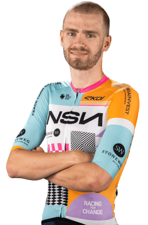

Moritz Kretschy
Datos personales
- Moritz Kretschy
- 12/05/2002
- Alemania
- NSN Cycling Team
- Nº115

Datos equipos
- NSN Cycling Team
- Israel Premier Tech Academy
- Rad-Net Oßwald
- Rad-Net Rose Team
Temporada 2025
| Nombre del dato | Resultado |
|---|---|
| Podios | 12 |
| Victorias | 5 |
| Clasificacion 4ª etapa Alpes Isère Tour | 1º |
| Clasificacion Tour de Taiwan | 2º |
| Clasificacion 2ª etapa Tour de Taiwan | 3º |
| Clasificacion 2ª etapa Tour de Taiwan | 4º |
Multimedia
Equipo NSN Cycling Team en la Vuelta Ciclista a España 2026